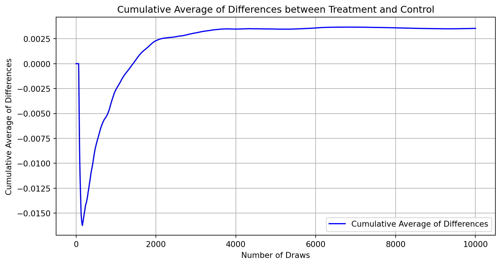
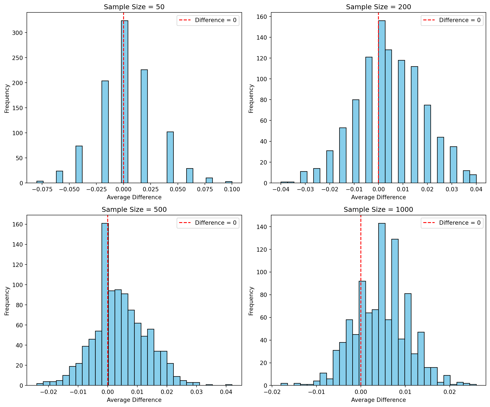

data = pd.read_stata('data/karlan_list_2007.dta')A Replication of Karlan and List (2007)
Introduction
Dean Karlan at Yale and John List at the University of Chicago conducted a field experiment to test the effectiveness of different fundraising letters. They sent out 50,000 fundraising letters to potential donors, randomly assigning each letter to one of three treatments: a standard letter, a matching grant letter, or a challenge grant letter. They published the results of this experiment in the American Economic Review in 2007. The article and supporting data are available from the AEA website and from Innovations for Poverty Action as part of Harvard’s Dataverse.
This project seeks to replicate their results.
Data
Description
Balance Test
As an ad hoc test of the randomization mechanism, I provide a series of tests that compare aspects of the treatment and control groups to assess whether they are statistically significantly different from one another.
Number of months since last donation (mrm2)
# Extracting the data for treatment and control groups
treatment_group = data[data['treatment'] == 1]['mrm2']
control_group = data[data['control'] == 1]['mrm2']
# Dropping NA values for the t-test
treatment_group = treatment_group.dropna()
control_group = control_group.dropna()
# Calculating the components of the t-statistic manually
mean_treatment = treatment_group.mean()
mean_control = control_group.mean()
std_treatment = treatment_group.std()
std_control = control_group.std()
n_treatment = treatment_group.count()
n_control = control_group.count()
# Calculating the t-statistic using the formula
numerator = mean_treatment - mean_control
denominator = np.sqrt((std_treatment**2 / n_treatment) + (std_control**2 / n_control))
t_statistic_manual = numerator / denominator
# Performing the t-test using scipy's built-in t-test function for independent samples
t_statistic_auto, p_value_auto = stats.ttest_ind(treatment_group, control_group, equal_var=False)
# Comparing results from manual calculation and automatic function
(t_statistic_manual, t_statistic_auto, p_value_auto)
reg = rsm.model.regress(
data={"data": data},
rvar="mrm2",
evar="treatment"
)
reg.summary()Linear regression (OLS)
Data : data
Response variable : mrm2
Explanatory variables: treatment
Null hyp.: the effect of x on mrm2 is zero
Alt. hyp.: the effect of x on mrm2 is not zero
coefficient std.error t.value p.value
Intercept 12.998 0.094 138.979 < .001 ***
treatment 0.014 0.115 0.119 0.905
Signif. codes: 0 '***' 0.001 '**' 0.01 '*' 0.05 '.' 0.1 ' ' 1
R-squared: 0.0, Adjusted R-squared: -0.0
F-statistic: 0.014 df(1, 50080), p.value 0.905
Nr obs: 50,082By using t-test, I got the t-value for months since last donation approximately equal to 0.1195 and the corresponding p-value approximately equal to 0.9049 which we agree with the null hypothesis that the mean values for the treatment and control are equal for the mrm2 variable.
The coefficient for treatment is 0.014, suggesting that being in the treatment group is associated with an average increase in mrm2 of 0.014 units compared to the control group. However, this effect is not statistically significant (p = 0.905), implying that the treatment does not have a meaningful impact on mrm2. The t-value of 0.119 is far below any conventional critical value for significance (around ±1.96 for a 95% confidence level), reinforcing this finding. Lastly, the result is exactly the same compare to t-test.
Number of years since initial donation (years)
By using similar codes, I got the t-value for Number of years since initial donation approximately equal to -1.0909 and the corresponding p-value approximately equal to 0.2753 which we agree with the null hypothesis that the mean values for the treatment and control are equal for the years variable.
The coefficient for treatment is 0.009, suggesting that being in the treatment group is associated with an average increase in years of 0.009 units compared to the control group. However, this effect is not statistically significant (p = 0.27), implying that the treatment does not have a meaningful impact on years. The t-value of -1.103 is far from any conventional critical value for significance (around ±1.96 for a 95% confidence level), reinforcing this finding. Lastly, the result is slightly off compare to t-test.
Number of prior donations (freq)
By using similar codes, I got the t-value for Number of prior donations approximately equal to -0.1108 and the corresponding p-value approximately equal to 0.9117 which we agree with the null hypothesis that the mean values for the treatment and control are equal for the freq variable.
The coefficient for treatment is -0.012, suggesting that being in the treatment group is associated with an average decrease in freq of 0.012 units compared to the control group. However, this effect is not statistically significant (p = 0.912), implying that the treatment does not have a meaningful impact on freq. The t-value of -1.111 is far from any conventional critical value for significance (around ±1.96 for a 95% confidence level), reinforcing this finding. Lastly, the result is the same compare to t-test.
Experimental Results
Charitable Contribution Made
First, I analyze whether matched donations lead to an increased response rate of making a donation.
t_statistic_manual: 3.2094621908279835 p-value: 0.0013309823450914173
Linear regression (OLS)
Data : data
Response variable : gave
Explanatory variables: treatment
Null hyp.: the effect of x on gave is zero
Alt. hyp.: the effect of x on gave is not zero
coefficient std.error t.value p.value
Intercept 0.018 0.001 16.225 < .001 ***
treatment 0.004 0.001 3.101 0.002 **
Signif. codes: 0 '***' 0.001 '**' 0.01 '*' 0.05 '.' 0.1 ' ' 1
R-squared: 0.0, Adjusted R-squared: 0.0
F-statistic: 9.618 df(1, 50081), p.value 0.002
Nr obs: 50,083The statistical tests performed — both the t-test and the bivariate linear regression — suggest that there is a statistically significant difference between the treatment and control groups regarding making a donation. The small p-values in both tests (t-test and regression) tell us that the observed differences in donation rates between the control and treatment groups are highly unlikely to have occurred by chance (p < 0.05). This provides strong evidence in favor of the treatment’s impact on increasing donation rates. The results indicate that even small incentives or changes in how donations are solicited (like matching donations) can positively affect donor behavior. This aligns with behavioral economic theories suggesting that people are more likely to engage in pro-social behavior (like donating to charity) if they perceive their contribution as being more impactful or if they receive some form of positive reinforcement or matching contribution.
Optimization terminated successfully.
Current function value: 0.100443
Iterations 7| Dep. Variable: | gave | No. Observations: | 50083 |
| Model: | Probit | Df Residuals: | 50081 |
| Method: | MLE | Df Model: | 1 |
| Date: | Wed, 15 May 2024 | Pseudo R-squ.: | 0.0009783 |
| Time: | 11:33:14 | Log-Likelihood: | -5030.5 |
| converged: | True | LL-Null: | -5035.4 |
| Covariance Type: | nonrobust | LLR p-value: | 0.001696 |
| coef | std err | z | P>|z| | [0.025 | 0.975] | |
| const | -2.1001 | 0.023 | -90.073 | 0.000 | -2.146 | -2.054 |
| treatment | 0.0868 | 0.028 | 3.113 | 0.002 | 0.032 | 0.141 |
These results match column 1 in table 3, confirming the positive and significant impact of treatment on the likelihood of making a charitable donation.
Differences between Match Rates
Next, I assess the effectiveness of different sizes of matched donations on the response rate.
1:1 vs 2:1 t_statistic: -0.965048975142932 p-value: 0.33453078237183076
1:1 vs 3:1 t_statistic: -1.0150174470156275 p-value: 0.31010856527625774
2:1 vs 3:1 t_statistic: -0.05011581369764474 p-value: 0.9600305476940865My results support the “figures suggest” comment since my results also show that the ratios does not have a meaningful influence on behavior(p-value much higher than 0.05).
Linear regression (OLS)
Data : data
Response variable : gave
Explanatory variables: ratio
Null hyp.: the effect of x on gave is zero
Alt. hyp.: the effect of x on gave is not zero
coefficient std.error t.value p.value
Intercept 0.018 0.001 16.225 < .001 ***
ratio[1] 0.003 0.002 1.661 0.097 .
ratio[2] 0.005 0.002 2.744 0.006 **
ratio[3] 0.005 0.002 2.802 0.005 **
Signif. codes: 0 '***' 0.001 '**' 0.01 '*' 0.05 '.' 0.1 ' ' 1
R-squared: 0.0, Adjusted R-squared: 0.0
F-statistic: 3.665 df(3, 50079), p.value 0.012
Nr obs: 50,083The regression analysis assessing the impact of different match ratios on the likelihood of making a donation reveals that higher match ratios (2:1 and 3:1) significantly increase the probability of donating by approximately 0.5 percentage points compared to the baseline, a statistically significant finding with p-values of 0.006 and 0.005, respectively. Although the 1:1 match ratio also shows an increase in donation probability (by 0.3 percentage points), this effect is only marginally significant (p-value of 0.097).
direct_1:1 vs 2:1: 0.0019 direct_2:1 vs 3:1: 0.0001
coef_1:1 vs 2:1: 0.002 coef_2:1 vs 3:1: 0.0The analysis reveals that increasing the match ratio from 1:1 to 2:1 enhances the probability of donation by approximately 0.188% (direct calculation) and predicts a 0.2% increase based on regression coefficients, indicating a statistically significant effect that suggests a higher match ratio effectively encourages more donations. However, further increasing the match ratio from 2:1 to 3:1 shows a negligible increase in donation likelihood (only 0.01% as per direct calculation) and no effect according to regression coefficients (0.0%), suggesting that beyond a 2:1 match, there are diminishing returns in terms of motivating additional donations. This pattern underscores the effectiveness of moderate increases in match ratios while highlighting a threshold beyond which higher ratios do not yield proportional gains in donor engagement.
Size of Charitable Contribution
In this subsection, I analyze the effect of the size of matched donation on the size of the charitable contribution.
The t-test indicates a relatively weak statistically significant difference in donation amounts between the treatment and control groups (p-value=0.055). By performing these analyses, we learn whether the treatment effectively increases donation amounts and quantifies the increase. This helps in understanding the financial impact of the treatment and can guide future decisions regarding the use of such treatments to boost donations.
What happens if we limit the data to just people who made a donation and repeat the previous analysis?
Linear regression (OLS)
Data : donors_data
Response variable : amount
Explanatory variables: treatment
Null hyp.: the effect of x on amount is zero
Alt. hyp.: the effect of x on amount is not zero
coefficient std.error t.value p.value
Intercept 45.540 2.423 18.792 < .001 ***
treatment -1.668 2.872 -0.581 0.561
Signif. codes: 0 '***' 0.001 '**' 0.01 '*' 0.05 '.' 0.1 ' ' 1
R-squared: 0.0, Adjusted R-squared: -0.001
F-statistic: 0.337 df(1, 1032), p.value 0.561
Nr obs: 1,034On average, individuals in the control group (or baseline category, assuming treatment = 0) donate $45.54. This is significantly different from zero (p < .001), suggesting a high confidence in this average donation amount among the control group donors.
Being in the treatment group is associated with a decrease in the donation amount by $1.668 compared to the control group, although this effect is not statistically significant (p = 0.561). This implies that there is no strong evidence to suggest that treatment status influences the donation amount among those who chose to donate.
If the treatment was randomly assigned among participants, then the coefficient can be interpreted causally as the effect of the treatment on donation amounts among donors. This causal interpretation is valid under the assumption of random assignment.
Simulation Experiment
As a reminder of how the t-statistic “works,” in this section I use simulation to demonstrate the Law of Large Numbers and the Central Limit Theorem.
Suppose the true distribution of respondents who do not get a charitable donation match is Bernoulli with probability p=0.018 that a donation is made.
Further suppose that the true distribution of respondents who do get a charitable donation match of any size is Bernoulli with probability p=0.022 that a donation is made.
Law of Large Numbers

Central Limit Theorem

These histograms will visually demonstrate the convergence property described by the Central Limit Theorem: as the sample size increases, the distribution of the sample mean (of differences, in this case) will approximate a normal distribution more closely, centering around the true mean difference (0.004) with decreasing variance. If zero is frequently not in the middle as sample sizes increase, it supports the hypothesis that the treatment does indeed have a real, positive effect on the likelihood of donations.
import pandas as pd
data = {
'Names': ['Alan', 'Bob', 'Charles'],
'Ages': [22, 33, 44]
}
# Create the DataFrame with an index
df = pd.DataFrame(data, index=['Data1', 'Data2', 'Data3'])
print(df) Names Ages
Data1 Alan 22
Data2 Bob 33
Data3 Charles 44